Agentic AI Build Week 2026 · First-person recap
My First Hackathon as a Non-Technical Builder
I entered AABW with business context, finance discipline, and curiosity—not a software engineering background. I left with a much wider definition of building: framing a real problem, designing the decision workflow, shaping an end-to-end product, turning the story into HTML slides, and making a demo that people could understand quickly.
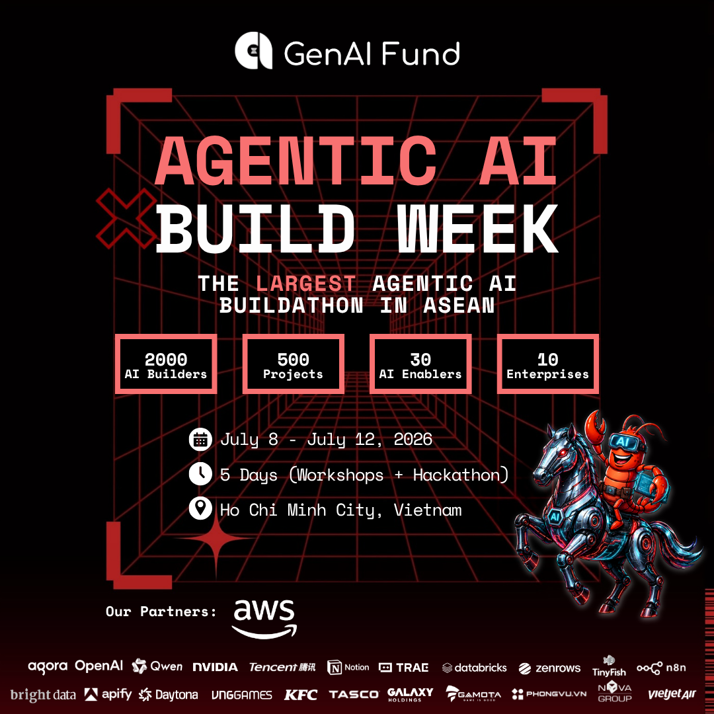
The short version
I did not become an engineer in five days. I became a better builder.
A clear business question can give technical work direction, priority, and a reason to exist.
The idea, workflow, controls, interface, pitch, and demo all need to tell the same story.
HTML slides and a focused demo turned complex logic into something a judge could follow.
On this page 8 sections
Starting point
My first lesson came before we built anything: non-technical does not mean passive.
Hackathons can look intimidating from the outside. The room is full of engineers, founders, AI tools, unfamiliar acronyms, and people who appear to ship at impossible speed. As a first-time participant without a traditional software background, my initial temptation was to define my role too narrowly.
That changed when I focused on the questions I already knew how to ask: Who has the problem? What decision needs to improve? Where does the current workflow fail? What should the system recommend, and where must a human remain accountable? Those questions became the bridge between a business brief and a product that could be built and explained.
I did not need to be the person writing every line of code to take ownership of the product story.
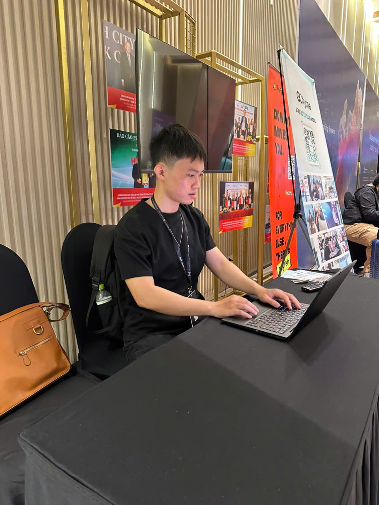
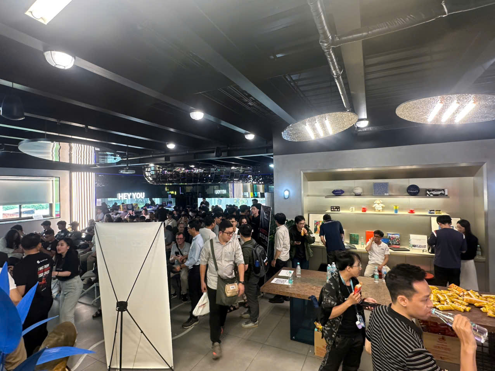
The arena
AABW was designed around real enterprise problems, not hypothetical feature lists.
Agentic AI Build Week ran from July 8–12, 2026 in Ho Chi Minh City. The official format combined three days of workshops with the hackathon kick-off and Demo Day. Enterprise tracks covered mobility, finance, retail, aviation, gaming, hospitality, and other operating environments.
GenAI Fund's public research preview describes a registration dataset of 2,719 approved builders across 55 countries. That does not mean every registrant was physically in the same room, but it does show the reach of the community we were building alongside.
Event facts are drawn from the official AABW website and GenAI Fund's State of AI Builders in Southeast Asia 2026 preview.
End-to-end build
The product started with a business question, then became a workflow, interface, pitch, and demo.
For the Financial Services II challenge, our focus was a proactive collections agent: identify repayment risk before the due date, recommend the next best action, and keep humans in control of customer-facing decisions.
-
01
Reframe the brief
Move from “send reminders faster” to “intervene earlier without damaging customer trust.”
-
02
Define the decision
Clarify who needs the recommendation, what evidence they need, and what action follows.
-
03
Map the workflow
Connect signals, risk scoring, treatment selection, approval, outreach, and learning.
-
04
Design the controls
Add human approval gates, reason codes, audit history, and safe learning boundaries.
-
05
Build the story
Turn the product logic into a six-slide HTML deck with a clear narrative arc.
-
06
Choreograph the demo
Show one focused user journey instead of trying to explain every possible feature.
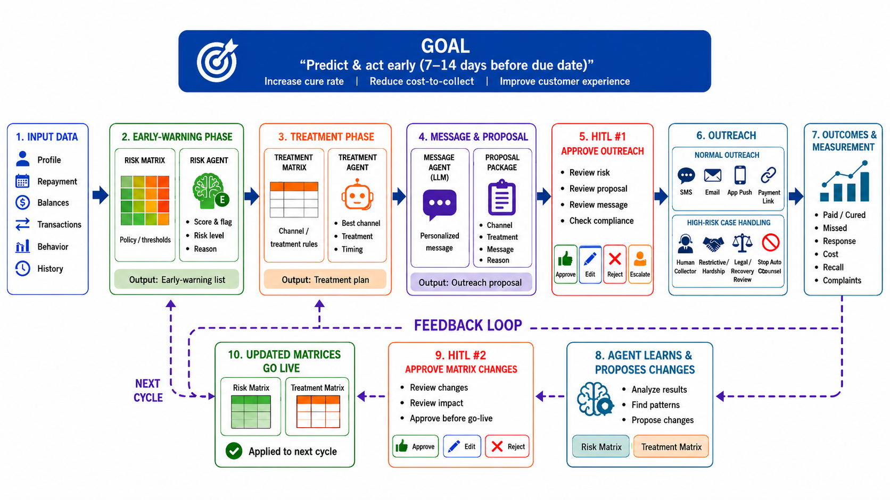
My contribution
I found my leverage at the intersection of finance, product thinking, and communication.
Translate the brief into a decision.
I kept the conversation anchored on cash timing, customer treatment, collector productivity, and accountability.
Connect every step to an owner.
I helped make the flow explicit: what enters the system, what the agent recommends, and where humans decide.
Make complexity easy to scan.
I structured the deck around the problem, operating model, economics, governance, and next step.
Show the decision, not the machinery.
I learned to focus the demo on one believable journey with readable screens, timing, and a clear payoff.
This was a hackathon concept and interactive product story—not a production deployment. The business case, workflow, and pilot metrics are framed as design evidence and modeled targets, not measured live results.
Presentation craft
Learning HTML slides changed how I think about presentations.
A normal slide deck is often treated as the last step. Building the presentation in HTML made it feel more like a product surface: responsive layout, keyboard navigation, motion, embedded media, and direct links could all become part of the experience.
The harder lesson was not technical. A good demo needs a plot. It needs a recognizable problem, one moment where the product changes the decision, and a credible ending. More screens do not create more confidence; clarity does.
The city became the campus
Tasco, AWS, VNG, and Galaxy made enterprise technology feel tangible.
Moving through partner venues changed the texture of the week. The event was not isolated in one conference hall; each space added context about how technology, operations, and community meet.
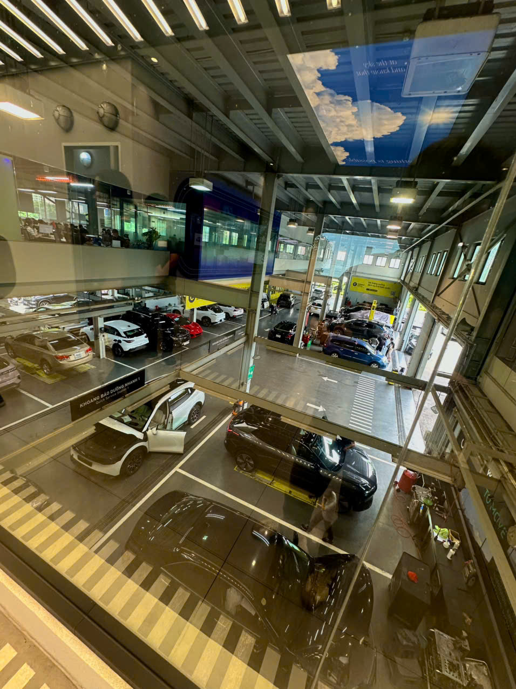
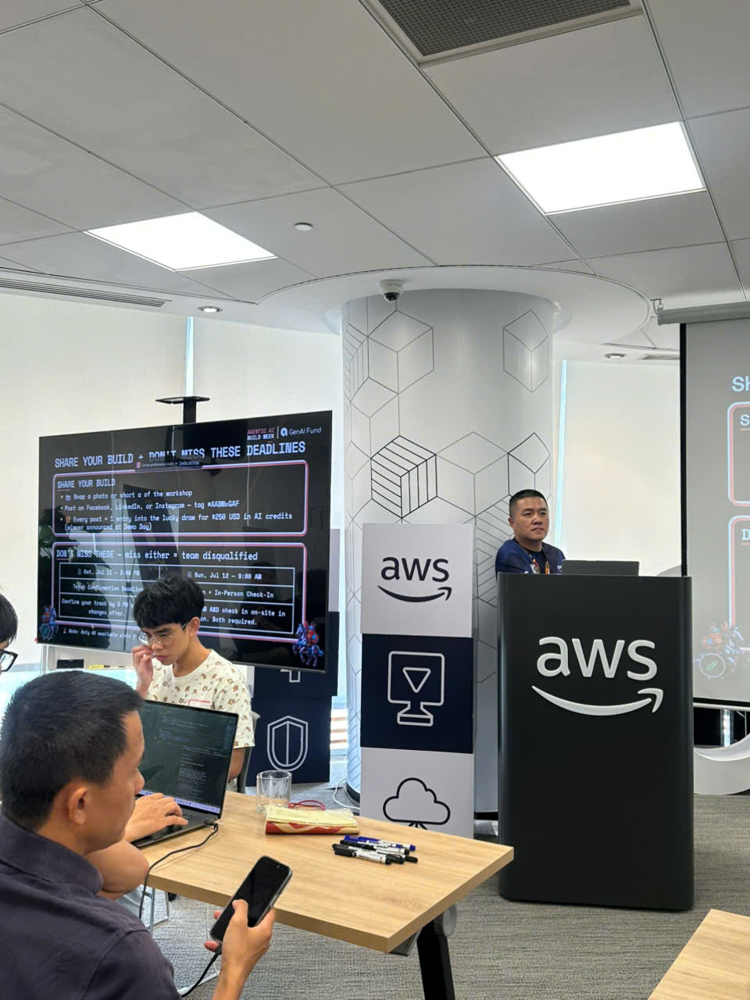
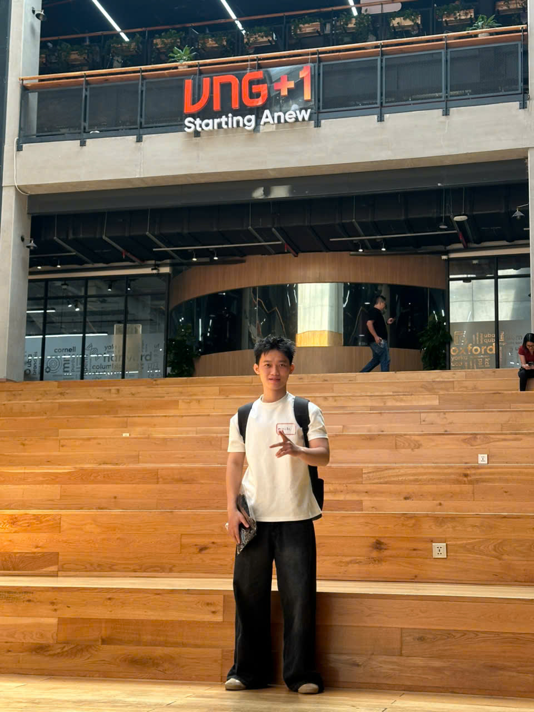
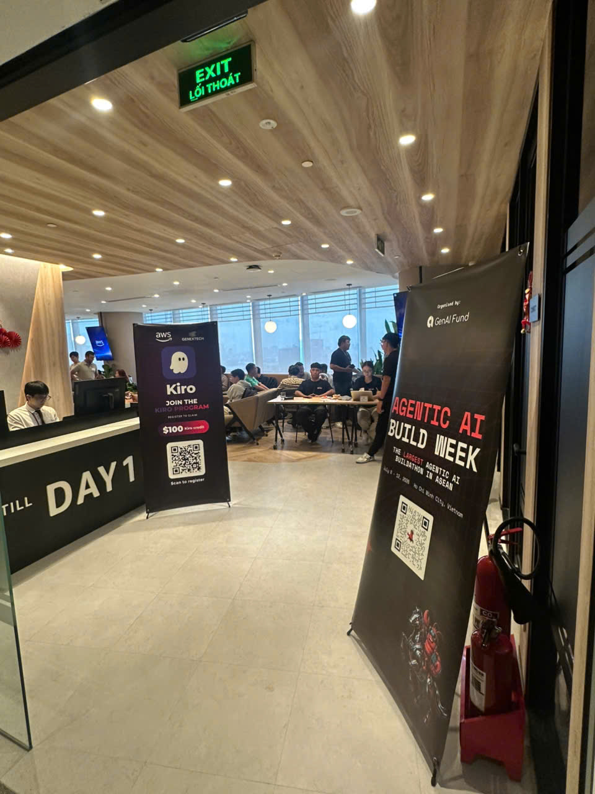
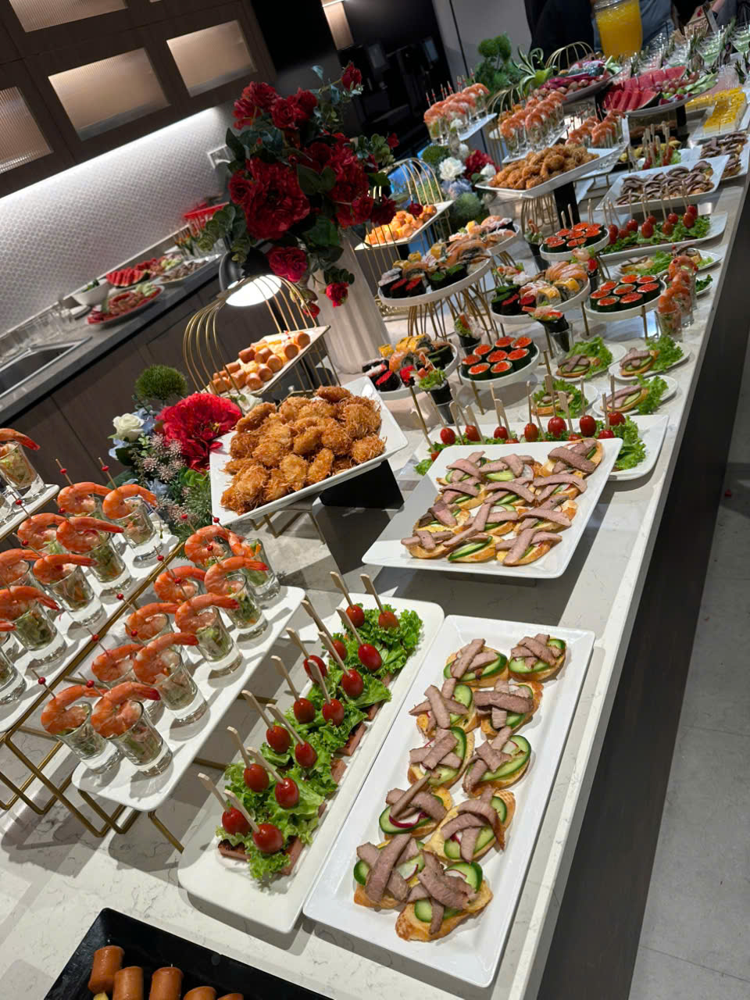
The people layer
The most valuable API was conversation.
I met builders with different technical depths, industries, nationalities, and reasons for joining. Some conversations solved a problem immediately. Others simply changed the way I thought about what was possible. In both cases, connection became part of the build process rather than a side activity.
The official dataset spans 55 countries. My personal takeaway is more grounded: when people with different vocabularies work on the same problem, the ability to ask clear questions and explain a decision becomes a real technical advantage.
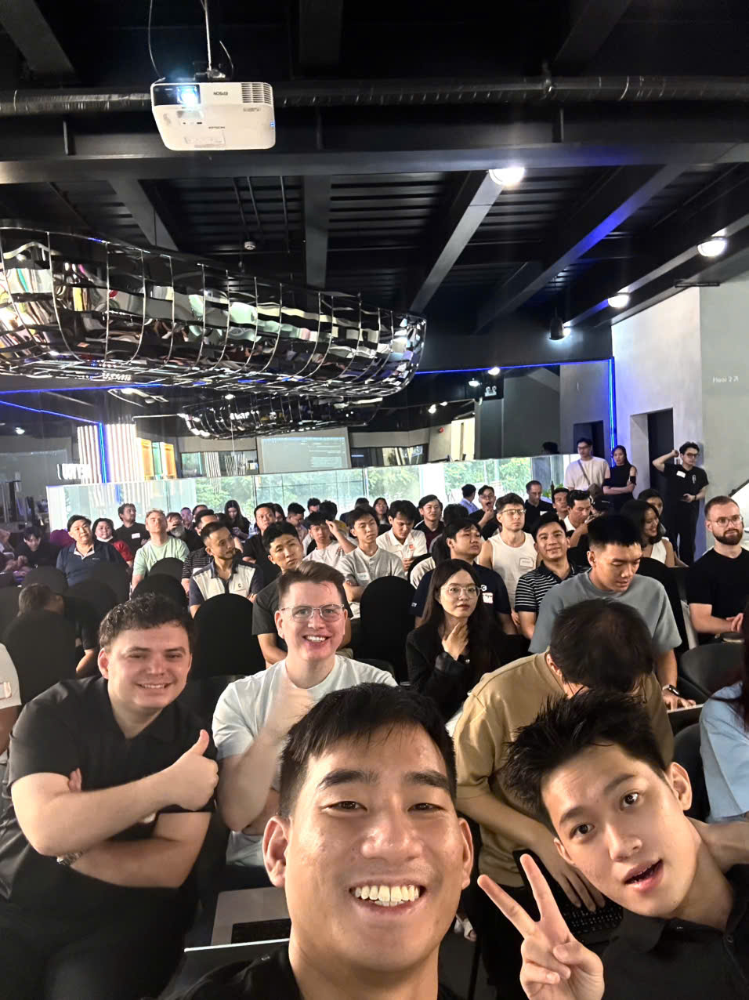
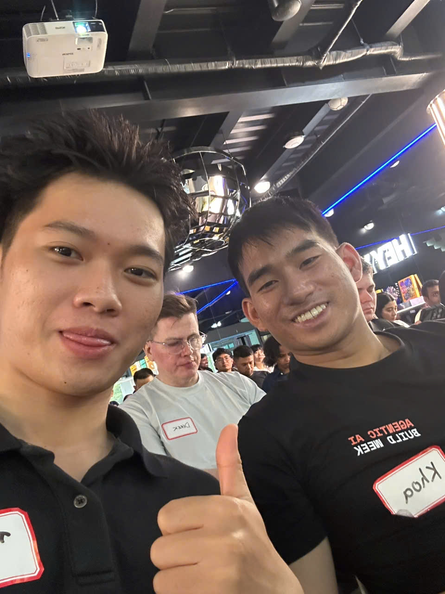
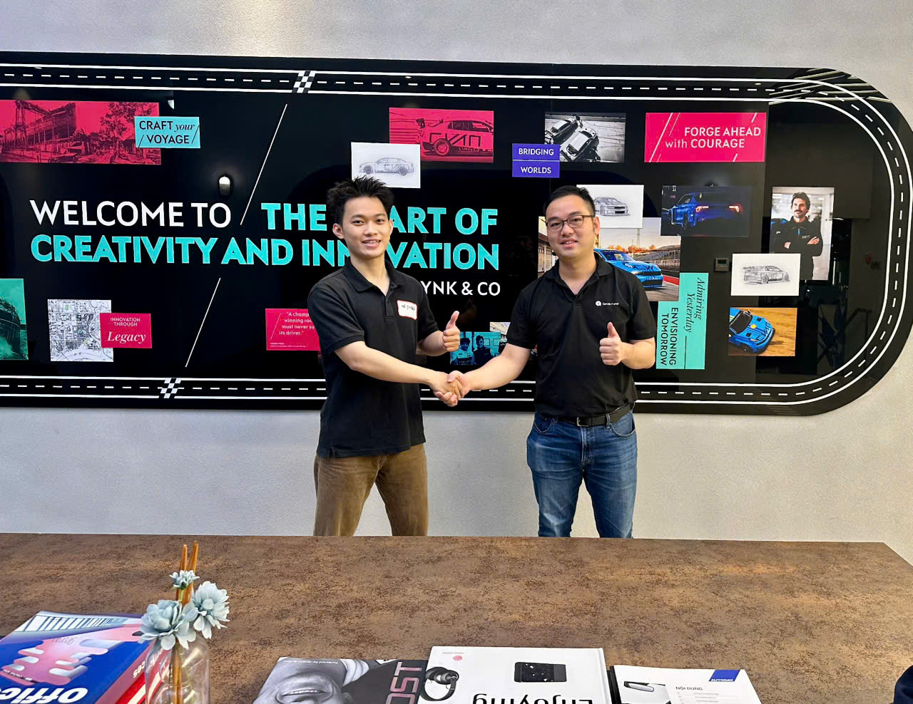
What stays with me
My biggest outcome was not a prize. It was a repeatable way to build.
Technology becomes useful when the owner, evidence, action, and guardrails are explicit.
Domain judgment, prioritization, user empathy, and communication reduce wasted technical effort.
A smaller set of connected steps is more believable than a long list of disconnected AI capabilities.
Its job is to make the audience understand why the product matters and what should happen next.
One honest conversation can reveal a blind spot that hours of solo work would miss.
From recap to proof
The week ended. The product-learning loop did not.
I now have a clearer playbook for future builds: frame the business decision, map the human and AI workflow, build the smallest credible experience, design the evidence, and present it with enough clarity that someone can act on it.